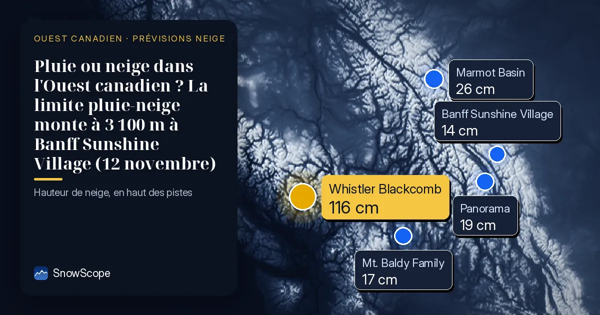

Pluie ou neige dans l'Ouest canadien ? La limite pluie-neige monte à 3 100 m à Banff Sunshine Village (12 novembre)
Entre 1 380 m et 3 410 m : c'est là que notre prévision place l'isotherme 0 °C dans l'Ouest canadien ces prochains jours. Aux heures les plus douces, la limite pluie-neige, environ 300 m plus bas, monte à 3 100 m à Banff Sunshine Village le jeudi 12 novembre ; en dessous, les précipitations tombent en pluie. Chaque chiffre ici est une estimation avec une part d'incertitude ; la tendance sur plusieurs jours est en général plus fiable qu'une valeur.
Consultez les prévisions neige en temps réel pour Banff Sunshine Village sur l'application SnowScopeHauteurs de neige, alertes poudreuse et carte 3D, gratuitement.
La pluie atteindra-t-elle le manteau ?
Risque de pluie sur neige à Banff Sunshine Village : environ 14 cm en haut du domaine et une limite pluie-neige au-dessus de mi-pente le 12 novembre et 14 novembre ; la neige deviendrait lourde et mouillée, puis glacée au regel.
Marmot Basin garde environ 26 cm en haut du domaine, et le 12 novembre et 14 novembre la limite pluie-neige passe au-dessus de mi-pente : la pluie sur cette neige ajoute de l'eau, l'alourdit et peut accélérer la fonte, puis elle devient glacée en regelant.
Risque de pluie sur neige à Panorama : environ 19 cm en haut du domaine et une limite pluie-neige au-dessus de mi-pente le 12 novembre et 14 novembre ; la neige deviendrait lourde et mouillée, puis glacée au regel.
À Whistler Blackcomb (2 284 m), la prévision donne 88 mm de précipitations, l'eau qui arrive sur la montagne ; pendant les heures humides, la limite pluie-neige est vers 1 440 m.
135 mm de précipitations sont prévus à Vancouver (10 m) ; pendant qu'ils tombent, la limite pluie-neige se trouve vers 1 260 m.
| Station | Hauteur de neige | Neige fraîche, 72 h | Attendu, jours suivants | Sommet |
|---|---|---|---|---|
| Banff Sunshine Village | 14 cm | 0 cm | 0 cm | 2 686 m |
| Marmot Basin | 26 cm | 2 cm | 0 cm | 2 504 m |
| Panorama | 19 cm | 2 cm | 0 cm | 2 368 m |
| Whistler Blackcomb | 116 cm | 40 cm | 83 cm | 2 259 m |
| Mt. Baldy Family | 17 cm | 3 cm | 5 cm | 2 119 m |

De la pluie jusqu'en haut ?
Le jeudi 12 novembre, l'isotherme 0 °C monte vers 3 410 m, au-dessus du sommet des remontées à 2 686 m : il peut pleuvoir jusqu'en haut.
La pluie sur la neige fraîche l'alourdit et, après une nuit froide, la rend glacée : les jours suivants conviennent mieux aux pistes damées qu'à la poudreuse.
Vers 2 174 m, Banff Sunshine Village a 9 cm aujourd'hui ; un 12 novembre normal y compte 29 cm.
Un hiver sur dix seulement dépasse 54 cm à cette date.
Il y a une semaine, le même endroit avait 7 cm.
Les hivers passés, la meilleure neige à Banff Sunshine Village arrivait d'habitude début mars / mi-mars.
Pluie ou neige dans chaque station
Banff Sunshine Village (bas 1 661 m, sommet 2 686 m) : la limite pluie-neige monte vers 3 100 m le 12 novembre, au-dessus du sommet, donc les précipitations tomberaient en pluie ou en neige mouillée sur tout le domaine et ruisselleraient.
À Marmot Basin (bas 1 724 m, sommet 2 504 m), une limite pluie-neige vers 2 900 m le 13 novembre passe au-dessus du sommet : pluie ou neige mouillée sur toutes les pentes s'il y a des précipitations.
Panorama (bas 1 152 m, sommet 2 368 m) : la limite pluie-neige monte vers 3 100 m le 12 novembre, au-dessus du sommet, donc les précipitations tomberaient en pluie ou en neige mouillée sur tout le domaine et ruisselleraient.
À Whistler Blackcomb (bas 653 m, sommet 2 259 m), une limite pluie-neige vers 2 400 m le 12 novembre passe au-dessus du sommet : pluie ou neige mouillée sur toutes les pentes s'il y a des précipitations.
Mt. Baldy Family (bas 1 732 m, sommet 2 119 m) : la limite pluie-neige monte vers 2 900 m le 12 novembre, au-dessus du sommet, donc les précipitations tomberaient en pluie ou en neige mouillée sur tout le domaine et ruisselleraient.
L'isotherme 0 °C et la fonte
L'isotherme 0 °C au-dessus des stations ci-dessous, de l'heure la plus froide à la plus douce de chaque jour : jeudi 12 novembre : de 1 730 m à 3 410 m. vendredi 13 novembre : de 1 480 m à 3 180 m. samedi 14 novembre : de 1 380 m à 2 990 m.
Comment la neige devient pluie sous l'isotherme 0 °C
L'air se refroidit en général quand on monte. Sous l'isotherme 0 °C, la neige qui tombe commence à fondre ; la fonte demande de l'énergie et du temps, donc elle ne devient pluie qu'environ 300 m plus bas : la limite pluie-neige. Dans un air sec, l'évaporation prend de la chaleur aux flocons et la limite peut être encore plus basse.
Conseils aux skieurs
- Les jours doux, la neige ramollit en absorbant la chaleur : skiez le matin sur les remontées les plus hautes et les pentes nord.
- L'isotherme 0 °C est une prévision avec une erreur de plusieurs centaines de mètres : revoyez la carte la veille.
- Avant toute sortie hors-piste ou en randonnée, lisez le bulletin d'avalanche officiel (liens ci-dessous).
- De la neige sur la carte ne veut pas dire que la station est ouverte : vérifiez remontées et dates sur son site.
À propos de ces chiffres
Les hauteurs de neige des stations sont la neige la plus épaisse sur le haut du domaine, d'après le modèle de neige SnowScope (environ 1 km, calcul du 12 novembre) ; ce sont des estimations pour une zone, pas une mesure en un point. Les valeurs des stations de mesure sont mesurées à la date indiquée. Les prévisions peuvent changer. Consultez toujours le bulletin d'avalanche officiel avant le hors-piste.
Bulletins d'avalanche officiels: Avalanche Canada
Citer ce bulletin
Pour la recherche, l'enseignement ou la presse : chiffres et graphiques réutilisables librement sous CC BY 4.0 avec cette citation.
SnowScope (2026), Pluie ou neige dans l'Ouest canadien ? La limite pluie-neige monte à 3 100 m à Banff Sunshine Village (12 novembre), https://snowscope.app/blog/fr/2026/11/western-canada-freezing-level-snow-line-12-november-2026.html, consulté le 2026-11-12
SnowScope (Atlas Labs). (2026, November 12). Pluie ou neige dans l'Ouest canadien ? La limite pluie-neige monte à 3 100 m à Banff Sunshine Village (12 novembre). SnowScope snow reports. https://snowscope.app/blog/fr/2026/11/western-canada-freezing-level-snow-line-12-november-2026.html
BibTeX
@misc{snowscope2026westerncanadafreezinglev,
author = {{SnowScope (Atlas Labs)}},
title = {Pluie ou neige dans l'Ouest canadien ? La limite pluie-neige monte à 3 100 m à Banff Sunshine Village (12 novembre)},
year = {2026},
month = nov,
howpublished = {\url{https://snowscope.app/blog/fr/2026/11/western-canada-freezing-level-snow-line-12-november-2026.html}},
note = {Published 2026-11-12 19:17 UTC; accessed 2026-11-12}
}· CC BY 4.0 · Méthodes, données et outils →
Suivre Banff Sunshine Village
Gratuit : un message quand la neige arrive, et la météo chaque matin.
Autres bulletins neige

Whistler Blackcomb a reçu 100 cm de poudreuse en 72 heures jusqu'au 8 novembre, mais elle est tombée de manière inégale : 96 cm au sommet, rien à la base.

Whistler Blackcomb a enregistré 76 cm de neige fraîche au cours des dernières 72 heures, et Mount Cain Alpine Park a également reçu 64 cm, en date du 16 novembre 2026.

Whistler Blackcomb a gagné 24 cm en une semaine pour atteindre 50 cm total ; 62 cm supplémentaires prévus en 72 heures alors que des tempêtes majeures frappent les montagnes (données du 8 novembre).